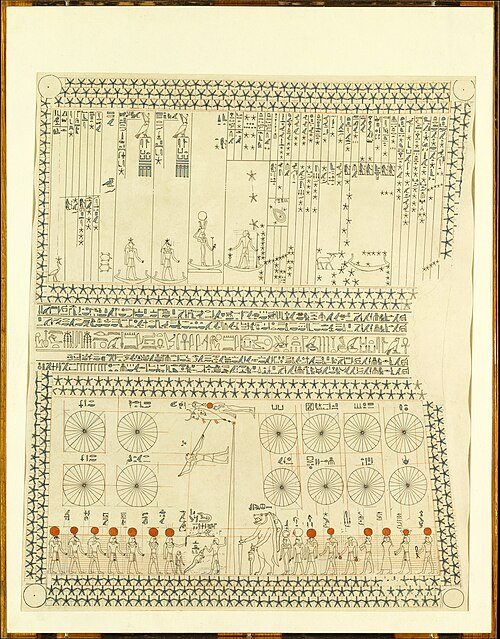

Sucked In – Pseudoscience in Black Holes
The Oldest Science
Astronomy is often called the oldest science. Civilisations such as the ancient Egyptians, Babylonians and Maya used celestial observations for timekeeping, navigation and religion.

Astronomical ceiling of the tomb of Senenmut.
The Modern Day
The mystery of the universe inspires curiosity — but that same wonder makes astronomy vulnerable to exaggerated or misleading headlines.
Black Holes
The Concept
First proposed in 1783 as “dark stars” whose gravity prevents even light from escaping.
Complexity
Ideas like singularities and spacetime curvature are difficult to explain clearly.
The Aim
To separate dramatic storytelling from established scientific evidence.
Examples of Misleading Claims
“Black Holes Are Portals”
“Time Stops Inside”
“Black Holes Do Not Exist”
Spacetime Warp Simulation
Conclusion
Speculative ideas often become sensational headlines. While theoretical physics explores fascinating possibilities, scientific understanding must remain grounded in evidence.